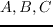
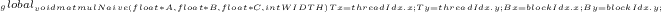
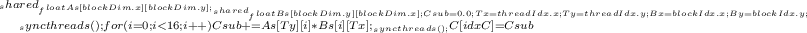
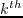

Next: Opportunities for Parallel Decomposition Up: Parallel Computing Previous: CUDA Execution architecture Contents
CUDA devices have three major levels of memory; Thread local, Block Shared, or Grid Global. This architecture is displayed diagrammatically in Figure 26, and summarised in Table 2.2.
In order to get data to and from the device, Global, Constant and Texture memory is read-write accessible from the host; any other memory allocation is done on a per-thread basis.
Texture memory is a particular area of constantly declared memory that is logically represented as a 2D array, and is augmented with a distributed cache of 2D localised values from last access and as such is significantly faster than Global memory. This behaviour is particularly useful for applications such as linear algebra and CFD.
Due to their scientific ubiquity, parallelisation of linear algebra systems is a heavily researched field, leading to highly customised libraries available, such as BLAS (Basic Linear Algebra Subprograms) and MKL (Math Kernel Library). cuBLAS is a CUDA library specifically optimised for most Level 1, 2, and 3 BLAS functions running on GPU, and this library and others like is is heavily used within the research communityM Fatica (2008).
This competitive optimisation in all linear algebra systems means that defined linear algebra functions are a natural benchmark for cross-comparison between parallel CPU and GPU implementations; each candidate library doing the best they can do with the hardware. And frankly, GPU wipes the floor with CPU, as in Figure 27.
|
|
In David B. Kirk (2010), a variety of matrix multiplication kernels designed for matrices of many thousands of elements are shown with a variety of optimisations. A Naive implementation is shown, as in Figure 28 that performs at (only) 17.2 GFLOPS2.40. With a few modifications, a similar kernel (Figure 30) can perform at 47.5 GFLOPS; nearly 280% faster. The major modification is the use of what is called 'shared' memory, i.e memory that is common to a thread-block.
In Figure 28; matrix pointers  point to the two input and one output matrix respectively, where global memory has been allocated and moved onto the device by the host application, and the kernel is invoked with the width of the matrix to stay in memory bounds. Each block of threads will calculate a section of the output matrix, as shown in Figure 29.
|  |
In this example, every access to A, B, or C (lines 15 and 20) is from/to Global memory. This access is orders of magnitude slower than the access to thread-local variables such as the A and B indexes. One improvement that can be made initially is to use block-shared memory. This is demonstrated in Figure 30. In this case, each thread retrieves one element from each input array, and stores it in block-shared memory, i.e the threads collaboratively copy the data required for whole-block execution. Note the __syncthreads() in lines 19 and 22; this CUDA call instructs each thread in the block to wait for all other threads in the block to come to the same execution point before continuing. In this case this is to ensure that all of the relevant elements have been copied by all of the block-warps before trying to do any actual calculations. The operation is similar to previous, as shown in Figure 29, except that the outer while loop makes each thread 'step' across the input matrices. This has the effect of greatly reducing the number of Global memory accesses, and has the added benefit of increasing what is called coalesced memory access.
|  |
Coalesced memory accesses are simply batching of memory reads and writes, where all (or most) threads in a warp access a linearly contiguous data space, i.e the  thread in a given warp accesses the element of an array. This way, the 'block' SP can perform these reads or writes as one instruction, instead of each individual thread accessing individually. In this case, matrix A accesses are largely coalesced, as each thread is grabbing its own element within a row of A, but B accesses are uncoalesced. One solution, that will not be investigated here, is performing an transpose on B and then performing the more complex multiplication; this operation would only be useful for fairly large Matrices.
Looking beyond shared memory and memory coalescing schemes schemes, CUDA exposes many memory access interfaces for handling different arrangements of data, and for more detailed information refer to NVidia Corporation (2011).
In summary, the performance of CUDA, and generally any, parallel application is dependant on many factors; from efficient runtime resource allocation; memory types and access techniques; and most importantly, input data dimensions. This is demonstrated when matrix multiplication algorithms are used applied to 'smaller' matrices; Figure 31 shows that for small matrices, , CPU-bound calculation is significantly more performant than GPU-bound solutions. From this section it is clear why this is so; memory latency, kernel processing overheads, and a minimal workload all work against a parallelised GPU implementation. Where the problem set is large, for instance, warp-swapping is used to continue to efficiently provision resources to queued warps while other warps are waiting on memory retrievals. This economy of scale is an important design heuristic when developing for GPU and will significantly influence the allocation of work in this project.
|
|
Andrew Bolster 2011-05-22